United Way for Greater Austin
Campaigns, carousels and one very big report for the nonprofit behind 2-1-1 in Central Texas.
- With Color Works
- 2024 to 2026
- Campaigns · Social media · Reports
United Way for Greater Austin is the nonprofit behind 2-1-1, the line people in Central Texas call when they need help. They also lead early childhood work like Success By 6 and its Pre-K Partnerships, and at election time they help their neighbors get ready to vote.
Since 2024 I've been designing for them through Color Works, one of the agencies I'm part of. These are a few of my favorite pieces from that time.
End of year campaign · 2024
Every minute, a neighbor calls 2-1-1
For the winter fundraising campaign I wanted you to almost hear the phone ringing. A woman on the line, a big "We need you" and the warm orange of their brand, from the big web banner down to the narrowest display ad. Every size had to say the same thing at a glance.
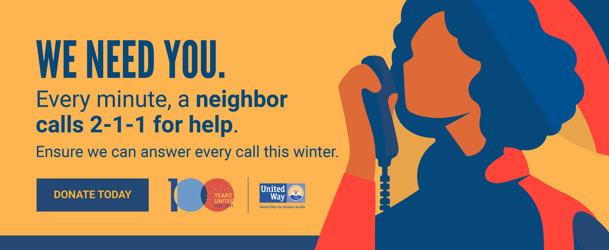
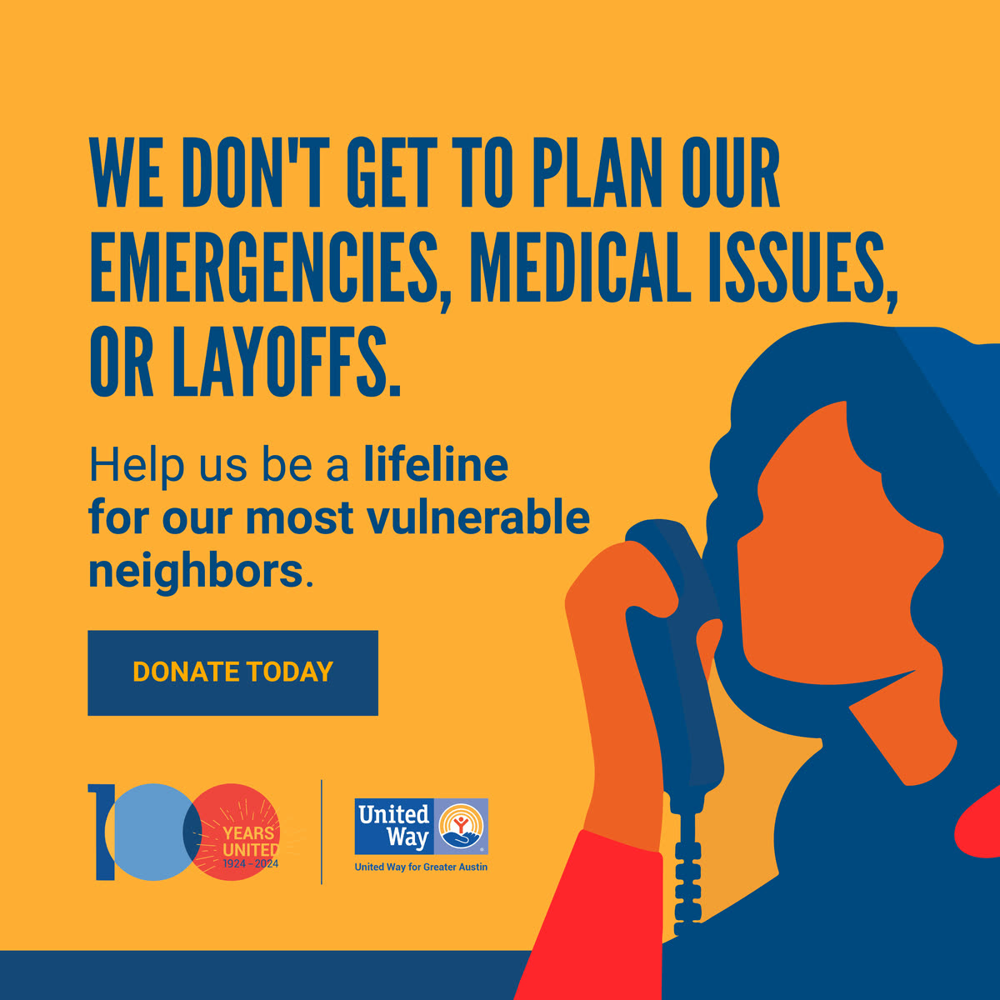
Campaign themes · 2025
United We Rise
For the 2025 campaign I explored different ways to say United We Rise: a script touch on the title, warm family photos, and bold shapes in red, green and blue. Each one has its own mood, so the team had real options to choose from.
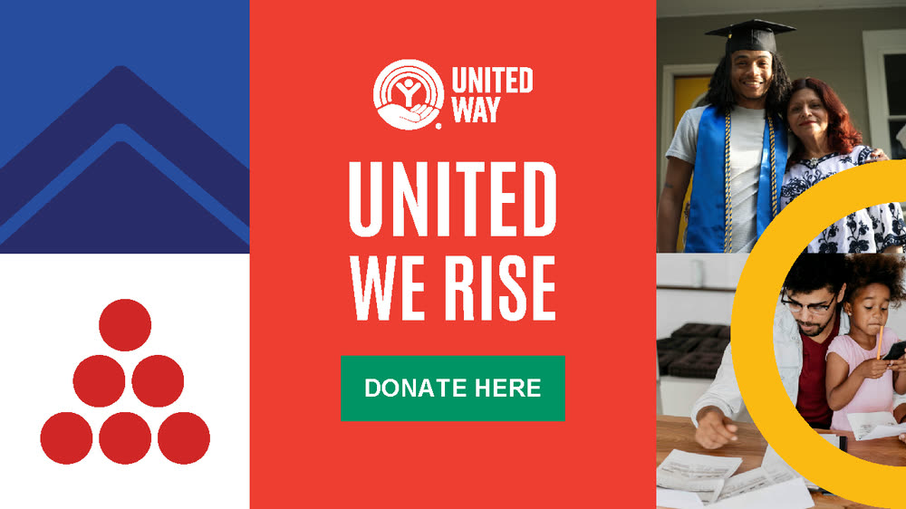
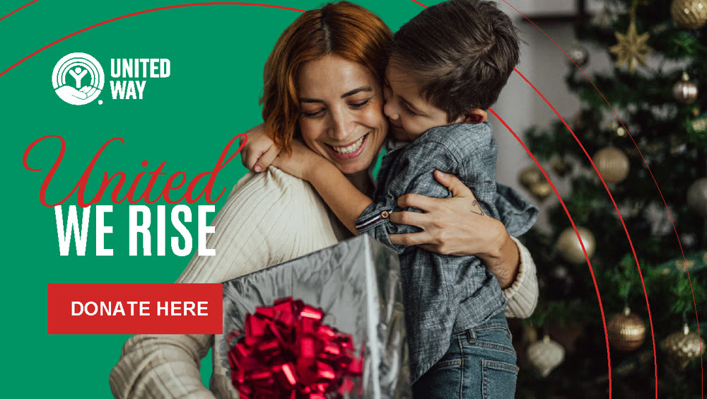
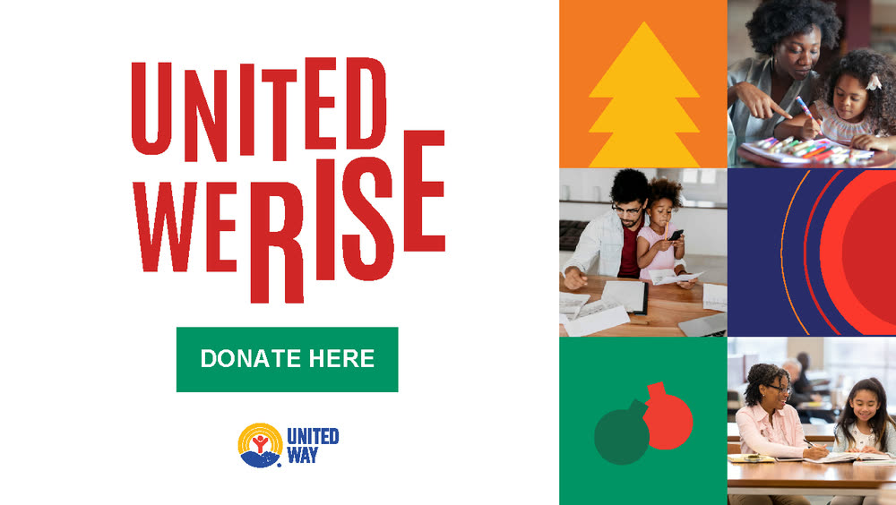
Get Out the Vote · 2026
Ready, set, vote
Their nonpartisan election push for 2026. A carousel for each step: the registration deadline, building a voting plan, a voter guide with the key dates, and an Election Day series full of Central Texas families.
Community Needs Report · 2026
Understanding needs across Travis County
A 77-page report United Way prepared in partnership with Austin Together, as the backbone of the Growing Philanthropy Initiative. With this much data, what mattered most was helping people find their way through it. Every section opens with a bold colored page and a big number, and the tables show in green and red what improved and what declined since 2019.
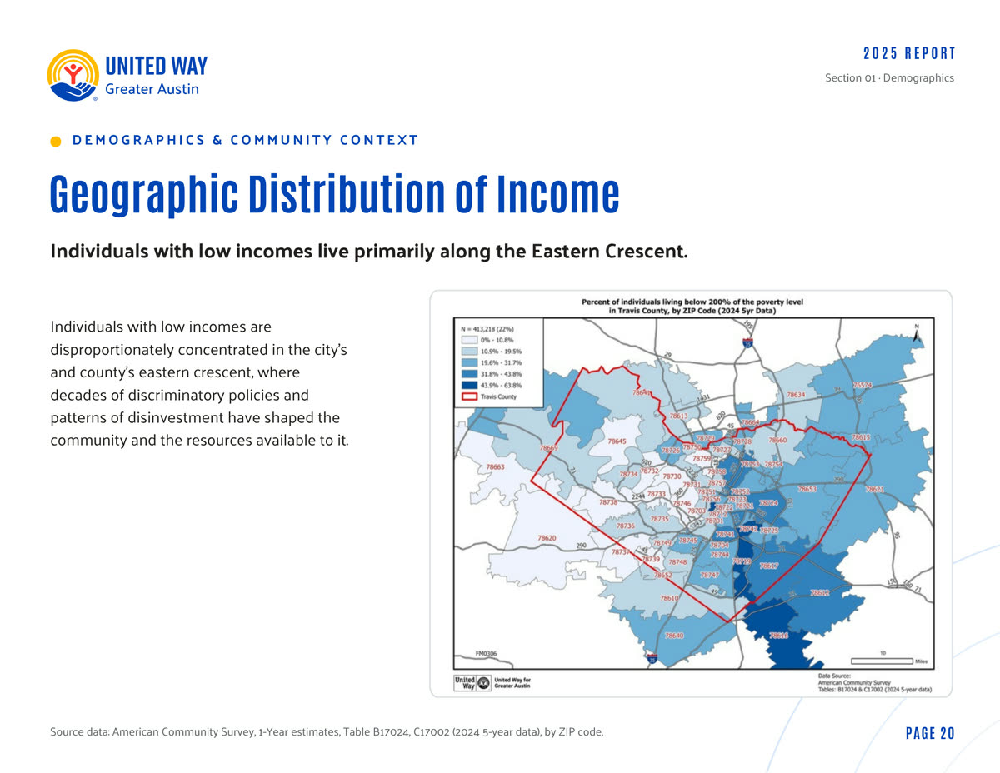
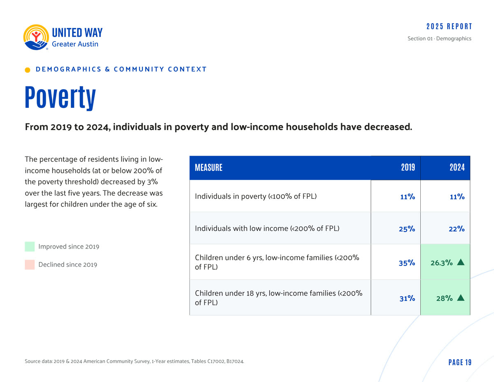
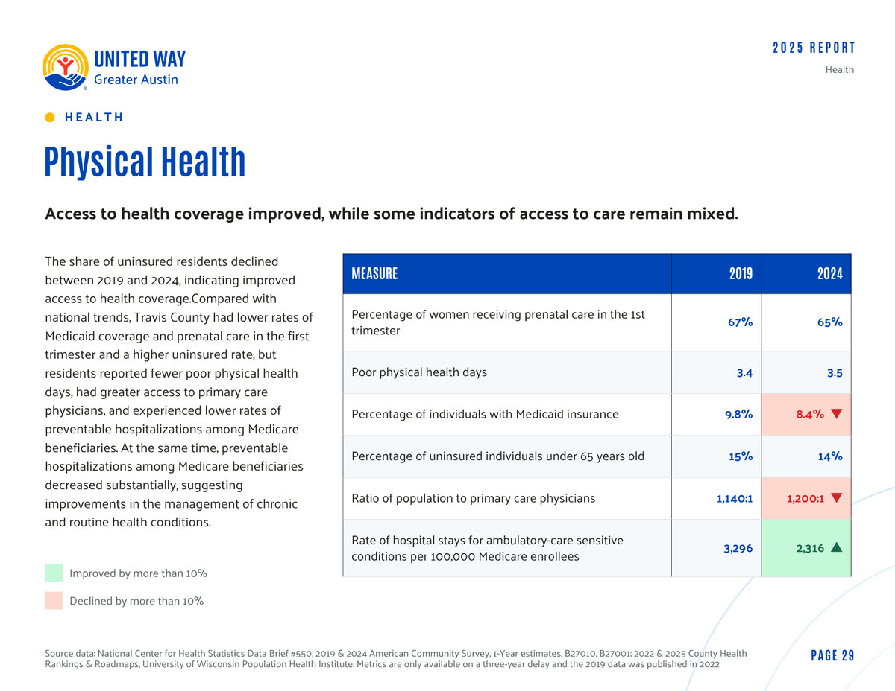
Social media · 2026
On their feed
Carousels for their social media: an invitation to get involved in advocacy, with a little emoji for each way to help, the year's impact in numbers, and the reveal of their 2026 community partners.
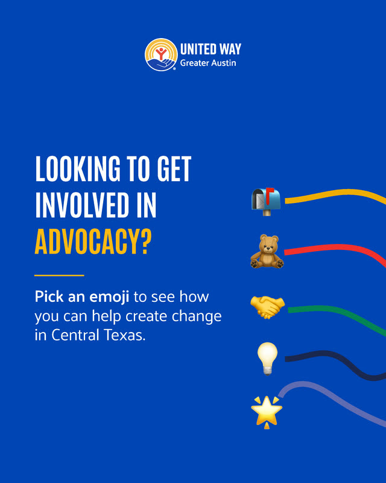
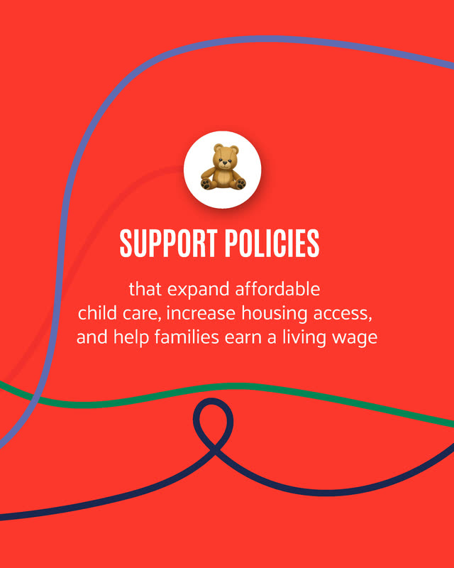
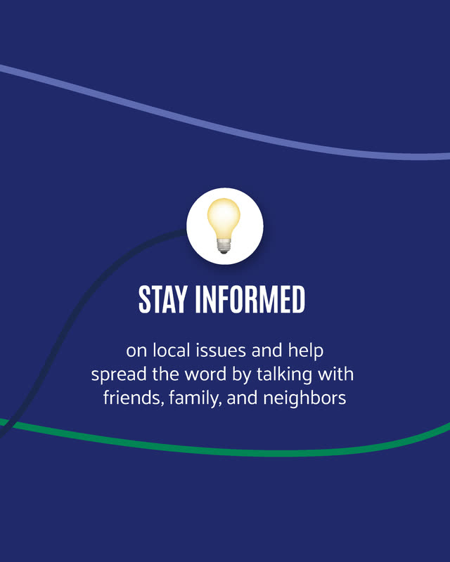
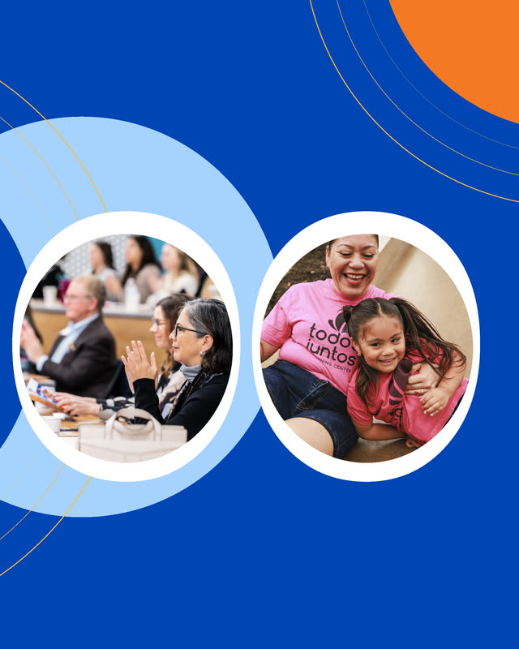
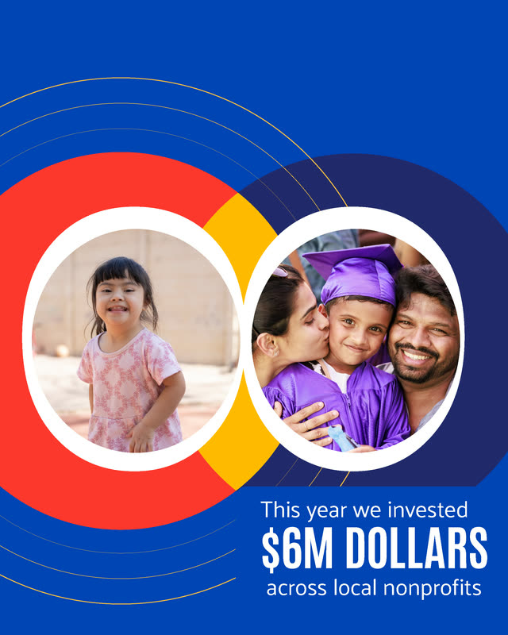
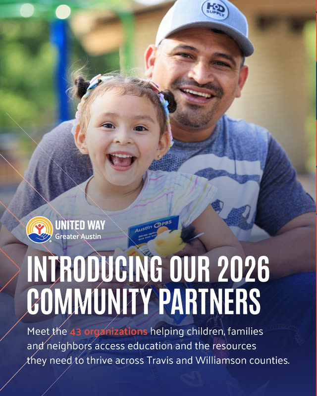
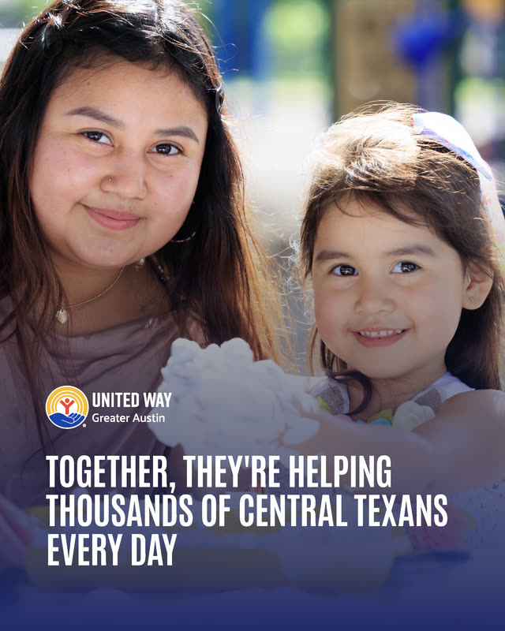
Need an extra designer on your team?
If you have a nonprofit client or a big campaign coming up, tell me about it. I'd love to take the long list of sizes and carousels off your team's plate.
Let's Talk See more of my work